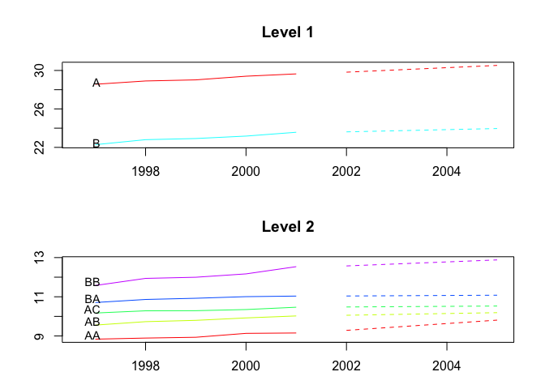

hts is retired, with minimum maintenance to keep it on CRAN. We recommend using the fable package instead.
The R package hts presents functions to create, plot and forecast hierarchical and grouped time series.
Installation
You can install the stable version on R CRAN.
install.packages('hts', dependencies = TRUE)
You can also install the development version from Github
# install.packages("devtools") devtools::install_github("earowang/hts")
Usage
Example 1: hierarchical time series
library(hts) #> Loading required package: forecast #> Registered S3 method overwritten by 'quantmod': #> method from #> as.zoo.data.frame zoo # hts example 1 print(htseg1) #> Hierarchical Time Series #> 3 Levels #> Number of nodes at each level: 1 2 5 #> Total number of series: 8 #> Number of observations per series: 10 #> Top level series: #> Time Series: #> Start = 1992 #> End = 2001 #> Frequency = 1 #> [1] 48.74808 49.48047 49.93238 50.24070 50.60846 50.84851 51.70922 51.94330 #> [9] 52.57796 53.21496 summary(htseg1) #> Hierarchical Time Series #> 3 Levels #> Number of nodes at each level: 1 2 5 #> Total number of series: 8 #> Number of observations per series: 10 #> Top level series: #> Time Series: #> Start = 1992 #> End = 2001 #> Frequency = 1 #> [1] 48.74808 49.48047 49.93238 50.24070 50.60846 50.84851 51.70922 51.94330 #> [9] 52.57796 53.21496 #> #> Labels: #> [1] "Level 0" "Level 1" "Level 2" aggts1 <- aggts(htseg1) aggts2 <- aggts(htseg1, levels = 1) aggts3 <- aggts(htseg1, levels = c(0, 2)) plot(htseg1, levels = 1)

smatrix(htseg1) # Return the dense mode #> [,1] [,2] [,3] [,4] [,5] #> [1,] 1 1 1 1 1 #> [2,] 1 1 1 0 0 #> [3,] 0 0 0 1 1 #> [4,] 1 0 0 0 0 #> [5,] 0 1 0 0 0 #> [6,] 0 0 1 0 0 #> [7,] 0 0 0 1 0 #> [8,] 0 0 0 0 1 # Forecasts fcasts1.bu <- forecast( htseg1, h = 4, method = "bu", fmethod = "ets", parallel = TRUE ) aggts4 <- aggts(fcasts1.bu) summary(fcasts1.bu) #> Hierarchical Time Series #> 3 Levels #> Number of nodes at each level: 1 2 5 #> Total number of series: 8 #> Number of observations in each historical series: 10 #> Number of forecasts per series: 4 #> Top level series of forecasts: #> Time Series: #> Start = 2002 #> End = 2005 #> Frequency = 1 #> [1] 53.2149 53.2149 53.2149 53.2149 #> #> Method: Bottom-up forecasts #> Forecast method: ETS fcasts1.td <- forecast( htseg1, h = 4, method = "tdfp", fmethod = "arima", keep.fitted = TRUE ) summary(fcasts1.td) # When keep.fitted = TRUE, return in-sample accuracy #> Hierarchical Time Series #> 3 Levels #> Number of nodes at each level: 1 2 5 #> Total number of series: 8 #> Number of observations in each historical series: 10 #> Number of forecasts per series: 4 #> Top level series of forecasts: #> Time Series: #> Start = 2002 #> End = 2005 #> Frequency = 1 #> [1] 53.71128 54.20760 54.70392 55.20024 #> #> Method: Top-down forecasts using forecasts proportions #> Forecast method: Arima #> In-sample error measures at the bottom level: #> AA AB AC BA BB #> ME 0.0007719336 0.0009183738 0.001003812 0.001043247 0.001087807 #> RMSE 0.1298400018 0.0515879830 0.040306867 0.037462277 0.105015065 #> MAE 0.0978321731 0.0436089571 0.033210387 0.027003846 0.081906948 #> MAPE 1.1275970221 0.4534439625 0.323535559 0.251066115 0.691364891 #> MPE 0.0367879336 0.0069220593 0.006785872 0.007787895 -0.011087494 #> MASE 0.6825678136 0.5197483057 0.774250880 0.447950006 0.493684443 fcasts1.comb <- forecast( htseg1, h = 4, method = "comb", fmethod = "ets", keep.fitted = TRUE ) aggts4 <- aggts(fcasts1.comb) plot(fcasts1.comb, levels = 2)


Example 2: hierarchical time series
# hts example 2 data <- window(htseg2, start = 1992, end = 2002) test <- window(htseg2, start = 2003) fcasts2.mo <- forecast( data, h = 5, method = "mo", fmethod = "ets", level = 1, keep.fitted = TRUE, keep.resid = TRUE ) accuracy.gts(fcasts2.mo, test) #> Total A B A10 A20 B30 #> ME -0.1463168 -0.2229191 0.07660233 -0.2283919 0.005472780 -0.01989880 #> RMSE 0.1500119 0.2452066 0.14257606 0.2523329 0.009805797 0.02928379 #> MAE 0.1463168 0.2229191 0.11693106 0.2283919 0.009268225 0.02409282 #> MAPE 9.3179712 7.5314777 2.36244104 8.7993966 2.460560011 1.71428541 #> MPE -9.3179712 7.5314777 1.45433283 8.7993966 -1.631079601 -1.39920296 #> MASE 0.4617075 1.2506962 0.84324674 1.5148807 0.337389275 0.52860991 #> B40 A10A A10B A10C A20A A20B #> ME 0.09650113 -0.05448806 -0.1733829 -0.0005209908 0.007965591 -0.002492811 #> RMSE 0.17060895 0.06809235 0.1867174 0.0100661166 0.012682474 0.008654148 #> MAE 0.14102388 0.05448806 0.1733829 0.0088897199 0.010413971 0.007052515 #> MAPE 3.98260313 4.37476593 21.6158413 1.5612291069 3.334410408 13.402921842 #> MPE 2.54768302 4.37476593 21.6158413 0.0605205225 -2.607467068 -2.981389244 #> MASE 1.51492018 0.51577051 5.3650162 0.6942763126 0.820393749 0.477277465 #> B30A B30B B30C B40A B40B #> ME 0.01212900 -0.01099794 -0.02102986 -0.04273559 0.1392367 #> RMSE 0.01311771 0.01422607 0.02442915 0.06656885 0.2344656 #> MAE 0.01212900 0.01099794 0.02102986 0.04273559 0.1811449 #> MAPE 4.13200908 2.39939647 3.26532975 3.09570196 8.2253477 #> MPE 4.13200908 -2.39939647 -3.26532975 -3.09570196 5.9207223 #> MASE 0.49670326 1.22312029 1.72843722 0.82335272 4.3982548 accuracy.gts(fcasts2.mo, test, levels = 1) #> A B #> ME -0.2229191 0.07660233 #> RMSE 0.2452066 0.14257606 #> MAE 0.2229191 0.11693106 #> MAPE 7.5314777 2.36244104 #> MPE 7.5314777 1.45433283 #> MASE 1.2506962 0.84324674 fcasts2.td <- forecast( data, h = 5, method = "tdgsa", fmethod = "ets", keep.fitted = TRUE, keep.resid = TRUE ) plot(fcasts2.td, include = 5)


Example 3: grouped time series
# gts example plot(infantgts, levels = 1)

fcasts3.comb <- forecast(infantgts, h = 4, method = "comb", fmethod = "ets") agg_gts1 <- aggts(fcasts3.comb, levels = 1) agg_gts2 <- aggts(fcasts3.comb, levels = 1, forecasts = FALSE) plot(fcasts3.comb)


fcasts3.combsd <- forecast( infantgts, h = 4, method = "comb", fmethod = "ets", weights = "sd", keep.fitted = TRUE ) fcasts3.combn <- forecast( infantgts, h = 4, method = "comb", fmethod = "ets", weights = "nseries", keep.resid = TRUE )